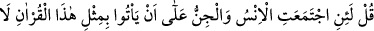
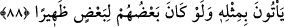

el-Kevâşî’de: “Yâni, rahmetimiz sebebiyle o Kur’an’ı senin üzerinde koruduk” der.
Devamla bu hitâbın Hz. Peygamber (s.a.)’e olduğunu, ama başkalarının kasdedildiğini
ekler.
“Çünkü O’nun” seni peygamber olarak görevlendirmesi, kitabı sana indirmesi ve onu
senin ezberinde bırakmasıyla “sana lütufkârlığı çok büyüktür.”
Kâşifî şöyle der: “Doğrusu senin üzerinde O’nun fazlı büyüktür ki seni
Âdemoğullarının efendisi kıldı. Peygamberlerin hâtemi eyledi. Livâü’l-hamdi (hamd
sancağını) ve makâm-ı mahmûdu (övgüye değer makamı) sana verdi. Kur’ân’ı sana
gönderdi. Ümmetinin içinde seni bâkî kılar ve onları helâk etmez.”
88. De ki: Andolsun, bu Kur’an’ın bir benzerini ortaya koymak üzere insanlar ve
cinler bir araya gelseler, birbirlerine destek de olsalar, onun benzerini ortaya
getiremezler.
Kur’an’ın ne kadar yüce olduğunu bilmeyen, onun bir beşer kelâmı olduğunu
zannedenlere “De ki: Andolsun, bu Kur’an’ın” belâğatta, mânâsının kemâlinde,
nazmının güzelliğinde, gaybdan haber vermesinde, hâlis Arapların, beyan ilmi erbâbının
ve tahkîk ehlinin anlayışına hitâb etmede “bir benzerini ortaya koymak üzere insanlar
ve cinler bir araya gelseler” yâni ittifak etseler “birbirlerine destek de” yardımcı da
“olsalar” eşsiz güzellikteki sıfatlarında “onun benzerini” ona benzer bir sözü “ortaya
getiremezler.”
Âyette yalnızca insanlar ve cinler zikredilmiştir. Çünkü, bu meydan okuma meleklere
değil onlara yapılmıştır. Çünkü Kur’an’ın Allah katından geldiğini inkâr edenler
insanlar ve cinler arasından çıkmıştır. Yoksa Kur’an’ın bir benzerini ortaya koymaya
Allah’tan başka kimse güç yetiremez. Aynü’l-hayât’ta şöyle der: “Cin kelimesi
melekleri ve görünmeyen her şeyi içine alır. Çünkü onlar gözle görülmezler.” Bahru’l-
ulûm’da ise şöyle der: “Melekler dışında yalnızca insan ve cinlerin zikredilmesi
meleklerin aksine bu iki sınıfın muhal üzere ittifak etmelerinin mümkün olduğuna işâret
eder. Çünkü melekler için böyle bir şey söz konusu değildir.
et-Te’vîlâtü’n-Necmiyye’de şöyle der: “Onun benzerini ortaya getiremezler”
buyrulmuştur. Çünkü Allah Teâlâ’nın kelâmının bir benzeri yoktur. Çünkü kelâmı O’nun
sıfatıdır. Zâtının benzeri olmadığı gibi sıfatlarının da benzeri yoktur. Çünkü Allah’ın
sıfatları kadîm ve kendi yüce zâtıyla kâimdir. Yaratılmışların sıfatları ise yaratılmıştır,
değişme ve yok olma kabul eder.